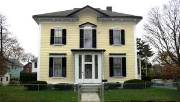

and another one bites the dust, so why can i not conquer love? and i might have thought i would be the one, wanted to fight this war without weopons. And i wanted it i wantet it bad, am doing everything i can.and another on bites you dust.you did not break me, am stil fighting for peace. i got thick skin and an elastic heart but you blade might pull too hard, am like a rubber band until you pull too hard. you wiil not see me fall part, i may snap and move too fast. coz i got an elastic heart. And now i stay up through the night and let it be clear wont close my eyes. And now i know i can survive, i'll walk through fire to save my life, and i wantet my life so bab, am doing everything i can, then another one bites the dust, it's hard to loose the chosen one. You did not break me, am still fifting for peace. Coz a've got thick skin and an elasic heart, but you blade might pull too sharp, am like a rubber band until you pull too hard, year i may snap and i move on, you will not see me fall apart,coz i've got an, elastic heart.Give me love like her,
'Cause lately I've been waking up alone,
Paint splattered teardrops on my shirt,
Told you I'd let them go,
And that I'll fight my corner,
Maybe tonight I'll call ya.
beauty

After my blood turns into alcohol,No, I just wanna hold ya.
All I want is the taste that your lips allow,
My, my, my, my, give me love,
Give me love like never before,
And it's been a while but I still feel the same,
You know I'll fight my corner,
After my blood is drowning in alcohol,
Give a little time to me or burn this out,
My, my, my, my, oh give me love,
For all the times that you rain on my parade
And all the clubs you get in using my name
You think you broke my heart, oh girl for goodness sake
You think I'm crying, oh my oh, well I ain't
And I didn't wanna write a song 'cause I didn't want anyone thinking I still care
I don't but, you still hit my phone up
And baby I be movin' on and I think you should be somethin'
I don't wanna hold back, maybe you should know that
My mama don't like you and she likes everyone
And I never like to admit that I was wrong
And I've been so caught up in my job, didn't see what's going on
And now I know, I'm better sleeping on my own
'Cause if you like the way you look that much
Oh baby you should go and love yourself
And if you think that I'm still holdin' on to somethin'
You should go and love yourself
But when you told me that you hated my friends
The only problem was with you and not them
And every time you told me my opinion was wrong
And tried to make me forget where I came from
And I didn't wanna write a song cause I didn't want anyone thinking I still care
I don't but, you still hit my phone up
And baby I be movin' on and I think you should be somethin'
I don't wanna hold back, maybe you should know that
My mama don't like you and she likes everyone
And I never like to admit that I was wrong
And I've been so caught up in my job, didn't see what's going on
And now I know, I'm better sleeping on my own
'Cause if you like the way you look that much
Oh baby you should go and love yourself
And if you think that I'm still holdin' on to somethin'
You should go and love yourself
For all the times you made me feel small
I fell in love, now I fear nothin' at all
I never felt so low when I was vulnerable
Was I a fool to let you break down my walls?
'Cause if you like the way you look that much
Oh baby you should go and love yourself
And if you think that I'm still holdin' on to somethin'
You should go and love yourself
'Cause if you like the way you look that much
Oh baby you should go and love yourself
And if you think that I'm still holdin' on to somethin'
You should go and love yourself.